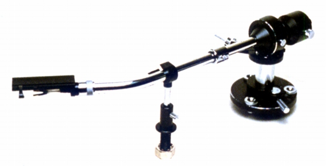
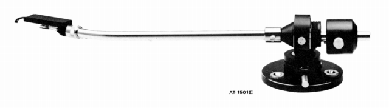
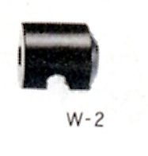
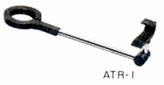

AT-1503�V

■価格 41,000円
■型式 スタティックバランス型
■全長 330�o
■実行長 257�o
■オーバー・ハング 15�o
■針圧範囲 0〜3.0g
■アーム高さ 28〜65�o
■アームベース穴 21�o
■トラッキングエラー 1.55゜
■カートリッジ自重 13.5〜33g（シェル含む）
■線間容量
■発売 1978年8月
■販売終了 1987年
■備考 価格は1978年頃のもの
「AT1503�V」に改称
（1503/1501共通）
付属機能：インサイドフォースキャンセラー
付属ヘッドシェルはLT-12(重量12.5ｇ)
内部リード線はテフロン被覆の銀線
オプションのサブウェイトW-2使用で対応カートリッジ自重 〜50g(1503
1501は40g)（シェル含む）
オプションのアームレストATR-1あり
AT-1501�V

■価格 45,000円
■型式 スタティックバランス型
■全長 358�o
■実行長 285�o
■オーバー・ハング 12�o
■針圧範囲 0〜3.0g
■アーム高さ 28〜65�o
■アームベース穴 21�o
■トラッキングエラー 1.30゜
■カートリッジ自重 13.5〜33g（シェル含む）
■線間容量
■発売 1978年8月
■販売終了 1987年
■備考 価格は1978年頃のもの
「AT1501�V」に改称

重量カートリッジ用交換カウンターウェイト W-2 4,000円

アームレスト ATR-1 5,000円
テクニカのインデックスへ